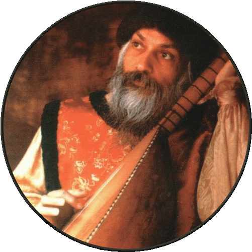

死亡的幻象
譯者序
獻給
想要瞭解死亡奧秘的人
對死亡還存有恐懼心理的人
傳統上我們總是認為死亡是一個悲劇，是一件悲傷的事。是一個避諱，因此在我們的生活當中，我們強調生命，甚至執著於生命。而排斥死亡。這是一種非常偏頗的心態。試問如果我們只歌頌白天，而不讓夜晚也發揮出它應有的功能，那麼我們的生活不是會嚴重地失去平衡嗎？
宇宙的運行需要靠正反兩極的交互動作運作，只有正極而沒有負極是違反宇宙法則的。如果生命是正極，那麼死亡就是負極，它們兩者必須合作無間，人生的進行才會順利才會平衡。如果你慶祝生命，那麼你也要慶祝死亡，因為生是死的開始，它們是綿綿不斷的、無始無終的房屋生命長串�堛漕潃虓奶p點。永恆的生命包含生命，也包含死亡。
在本書�堶捷灟蚺j師以他成道的智慧將他所洞察到的死亡真相表露出來，讓我們對死亡有一個新的，正確的瞭解。我們常常說要有正確的人生觀，我相信瞭解死亡在生命中的地位對我們建立正確的人生觀有很大的幫助。人生中最重要的事情－－愛和靜心－－都跟死亡有關。我們能夠忽視這個人生重要的課題嗎？
如果能夠藉著瞭解死亡而免除對它不必要的恐懼，那麼一個人將會變得更有勇氣，使生命力的開展得以發揮得更淋漓盡致。
死亡是在孕育生命。
希望本書能夠幫助你啟發出更多的生命力。
| 謙達那 |
| 引言 |
每當有人死了－－你所知道的人，你曾經愛過的人，曾經跟你在一起生活過的人，已經變成你存在的一部分的人－－某種在你�堶悸漯F西也死了。當然你會相信那個人，你會感覺到有一個真空，那是自然的，但是那個真空可以被轉化成一道門。死亡是一道門。
死亡是唯一留下來沒有被人類腐化、沒有被人類所染指。當人們面對死亡，他們會覺得悵然若失，不知所措，他無法瞭解它，他無法從它做也一個科學，那就是為什麼死亡尚未被腐化，那是目前世界上僅存的沒有被腐化的事。
多少世紀以來，我們一起都被教導說死亡是反對生命的。死亡是生命的敵人，死亡是生命的終點。當然我們都因此而變得拫害怕而無法放鬆，無法處於放開來的狀態。如果你對死亡無法處於放開來的狀態，你在你的生命中將會保持緊張，因為死亡跟生命並不是分開的。
除非你接受死亡，否則你將保持只是一半，只是一部分，你將保持偏頗。當你同時也接受死亡，你支委會變得平衡，那麼一切就都被接受了－－白天和晚上，夏天和冬天，光和黑暗，全部都被接受。當兩者都被接受，當生命的兩極都被接受，你就會得到平衡，你就會應得很鎮靜，你就會變得完整。
| 目錄 |
 |
| 第一部分 在生命中唯一確定能夠確定的就是死亡 | |
| 第二部分 你的死是救星 | |
| 第三部分 注意看，你就會知道 | |
| 第四部分 走入你存在的核心 | |
| 第五部分 全然享受——來自發光頂峰的看法 | |
| 附錄 死亡面面觀 |